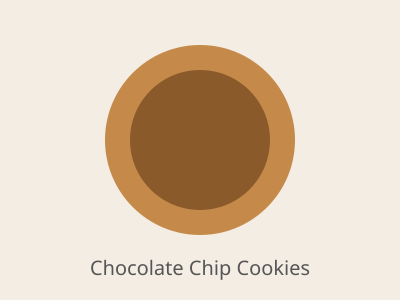

Home
Chocolate Chip Cookies

Description
These chocolate chip cookies have crisp, golden edges and soft, chewy centers
studded with pockets of melted chocolate.
Chilling the dough for a short time keeps them thick and helps the flavor develop.
The recipe makes about 24 cookies.
Ingredients
- 2 1/4 cups all-purpose flour
- 1 tsp baking soda
- 1 tsp salt
- 1 cup (2 sticks) butter, softened
- 3/4 cup granulated sugar
- 3/4 cup packed brown sugar
- 2 large eggs
- 2 tsp vanilla extract
- 2 cups semisweet chocolate chips
Steps
- Whisk together the flour, baking soda and salt in a bowl.
- In a large bowl, beat the butter with both sugars until light and fluffy.
- Beat in the eggs one at a time, then stir in the vanilla.
- Gradually mix in the dry ingredients, then fold in the chocolate chips.
- Chill the dough for 30 minutes. Meanwhile, preheat the oven to 375°F (190°C).
- Scoop rounded tablespoons of dough onto ungreased baking sheets, spaced 2 inches apart.
- Bake for 9-11 minutes until the edges are golden.
- Cool on the baking sheet for 2 minutes, then move to a wire rack.